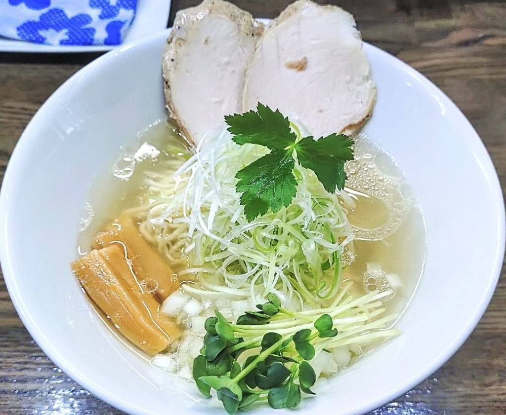
蛤塩そば 極みHAMAGURI
蛤の出汁を塩で受けた一杯でございます。
鶏と貝、煮干し、海老。
出汁を替えて、
澄んだ一杯をお出ししております。
古河駅の西口から歩いて4分ほど。ご注文は入口の券売機で承っております。夜は22時30分まで灯しておりますので、お仕事帰りにもどうぞ。
※ご予約は承っておりません。お席が空き次第ご案内いたします。
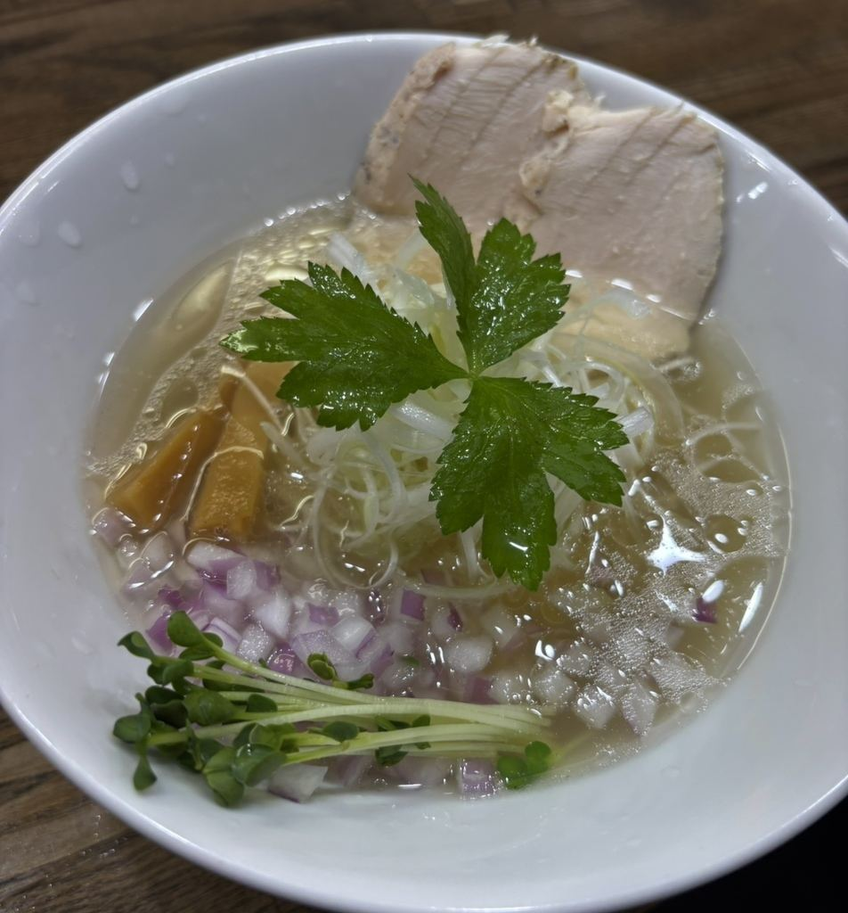
二〇二二年十月、古河駅の西口から続く通りに店を開きました。昼と夜、二度のれんを掛けております。
麺は細めのストレートで、スープに合わせて茹で加減を決めております。カウンターとテーブルの小さな店ですので、お一人でも気兼ねなくお過ごしいただけます。ご注文は入口の券売機で承っておりますので、お決まりでしたらそのままお席へどうぞ。
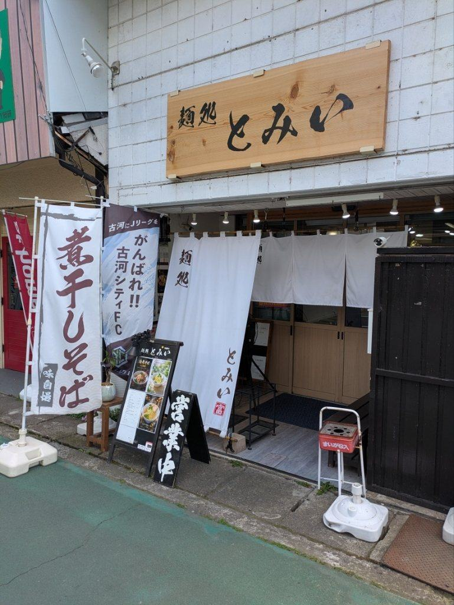
当店の看板は、金の中華そばでございます。鶏と貝からそれぞれ出汁をひき、白醤油で合わせております。
具は、低温で仕上げた鶏むねのチャーシューにメンマ、三つ葉、そして刻んだ紫玉ねぎを少しばかり。細めのストレート麺を合わせております。
はじめてお越しの方には、まずこの一杯をおすすめしております。
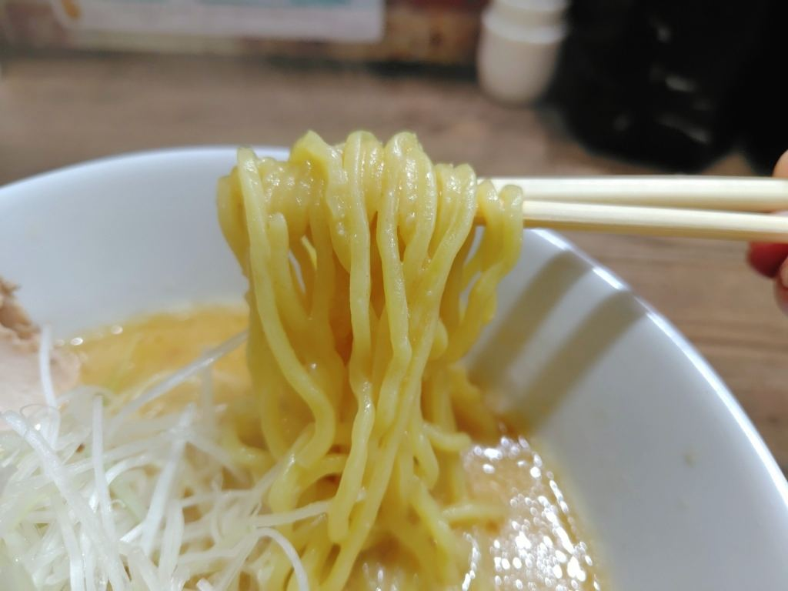
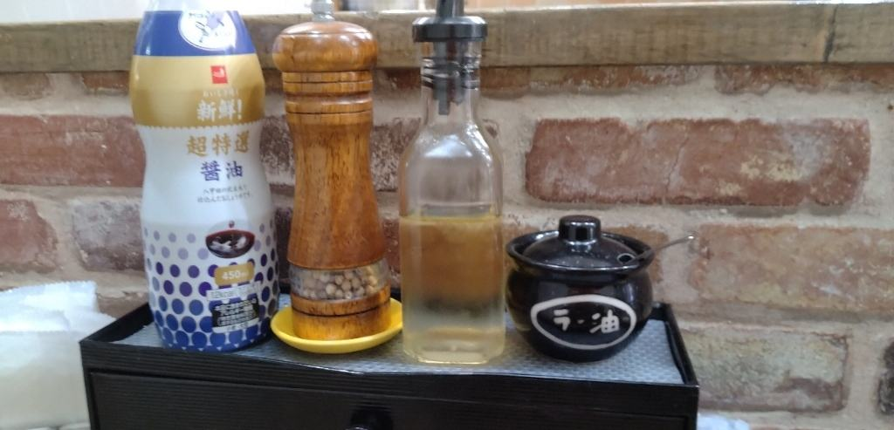
蛤、煮干し、海老。素材ごとに出汁のひき方と塩梅を変えてお出ししております。季節には味噌や醤油の一杯、冷やしの一杯もご用意いたします。

蛤の出汁を塩で受けた一杯でございます。
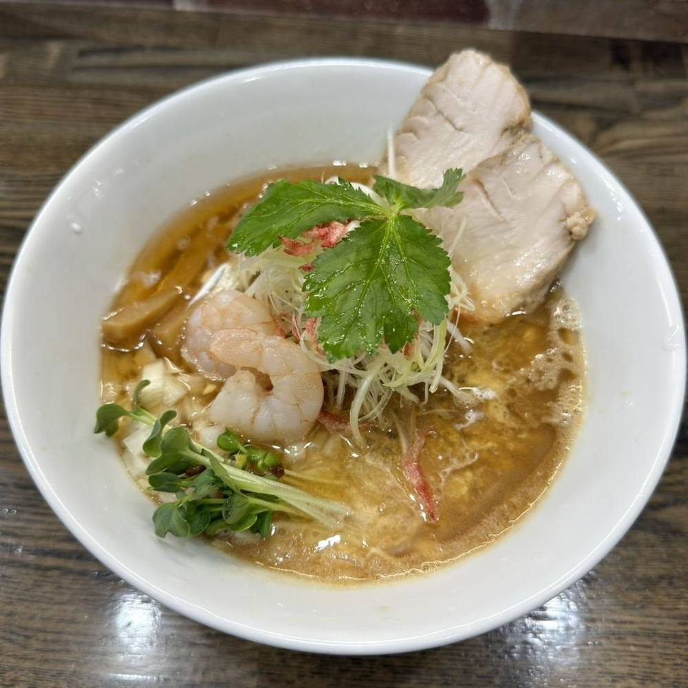
むき海老と桜海老で、海老の香りを立たせております。
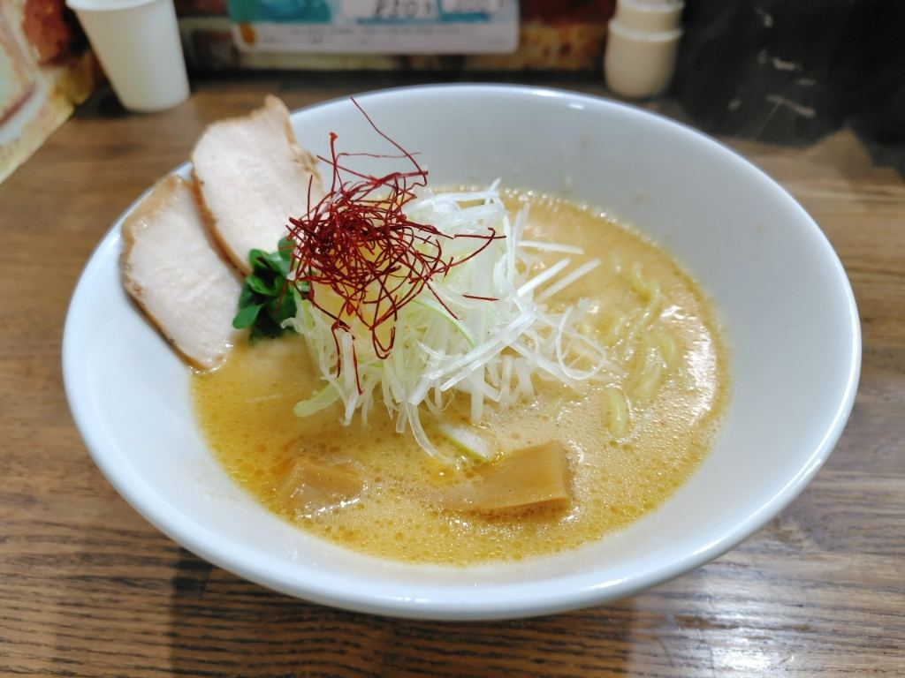
北海道熟成味噌、京の蔵出し醤油、冷やしの一杯など。その日の黒板でご案内しております。
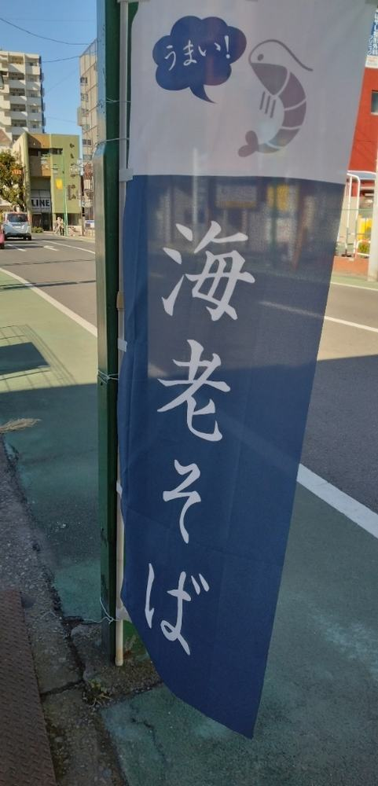
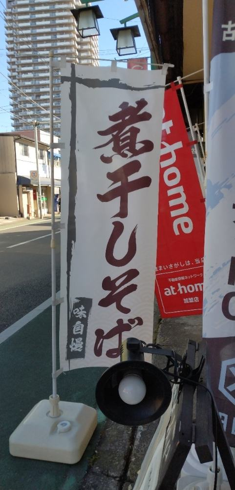
17:30 — 22:30 ご注文は 22:00 まで
一日の終わりに、締めの一杯を召し上がっていただけましたら幸いです。
生ビールとお酒、つまみも少しばかりご用意しております。お一人でも、お仕事帰りのお二人でも、どうぞお立ち寄りくださいませ。
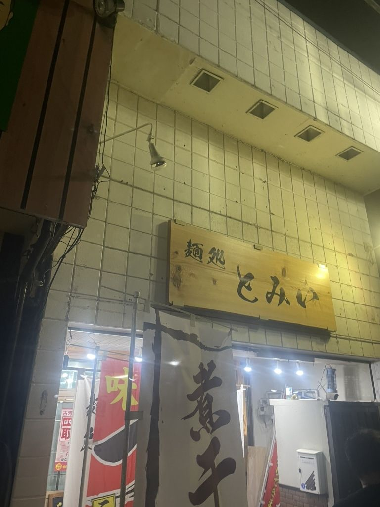
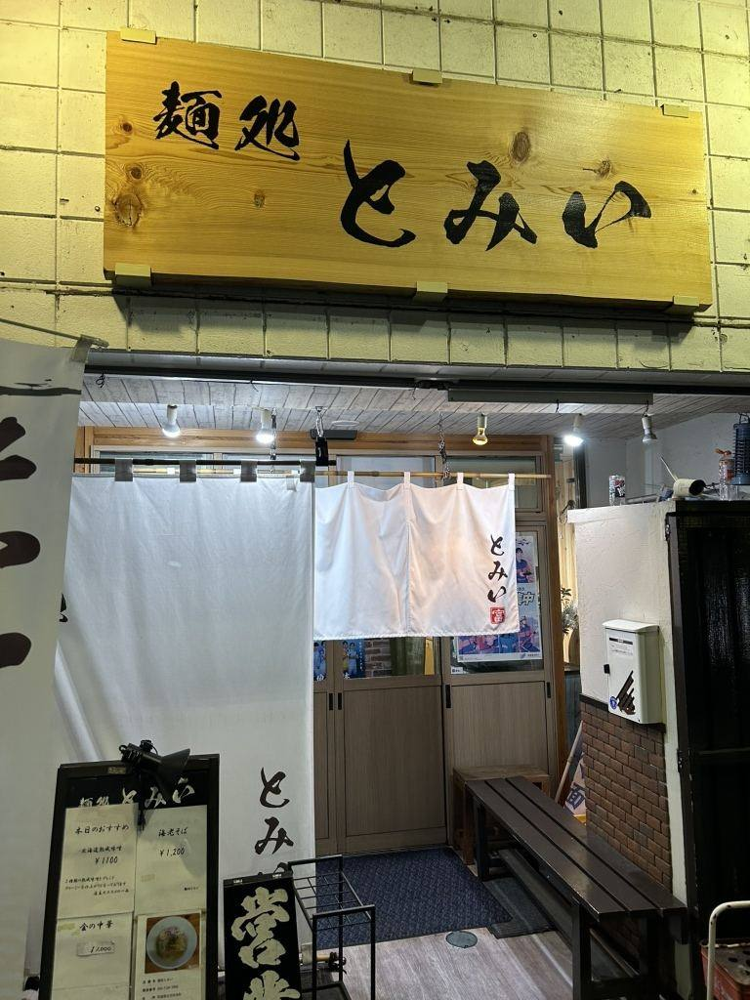
ご予約は承っておりません。お席が空き次第、順にご案内いたします。
お店に入ってすぐの券売機で食券をお求めください。そのまま席にお着きいただき、食券をお渡しくださいませ。
現金のほか、クレジットカード・電子マネー・QRコード決済を承っております。
店の真向かいのタイムズをご利用ください。駐車券をお持ちいただければ、当店から100円お戻しいたします。
カウンターの端にご用意しております。ご自由にお使いくださいませ。
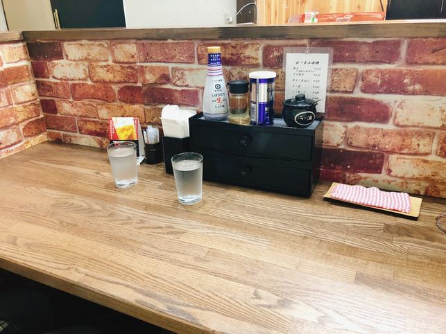
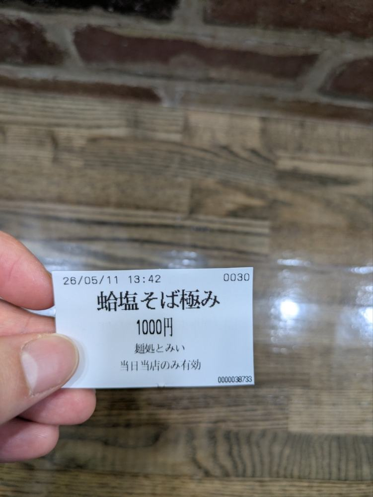
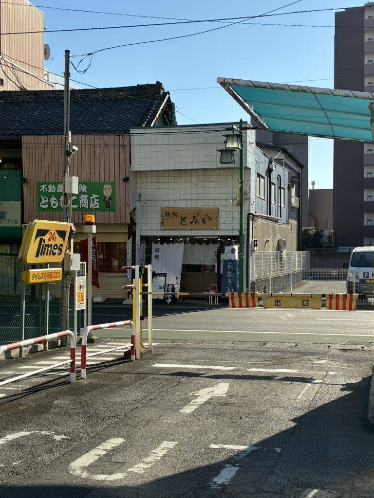
スープは海老の旨味があふれている濃厚タイプ。麺は細麺のややかため。トッピングには海老、チャーシュー、メンマ、ネギなど。全体的に海老の旨味があふれ、美味しいラーメンです食べログ 2026年6月のクチコミより
はまぐりの風味が穏やかに感じられる飲み口の良いスープ。麺は細めのストレート麺。パツっとした歯切れの麺は、スープとの絡みも良好食べログ 2026年5月のクチコミより
薬味の中にゆずがあり、ゆずの香りもしっかりして、おいしくいただけます。ご主人の明るい挨拶を受けました食べログ 2026年5月のクチコミより
JR古河駅の西口を出て、通りを南へ歩いて四分ほど。白いのれんと、木の看板が目印でございます。
| 住所 | 〒306-0023 茨城県古河市本町2-5-39 |
|---|---|
| 電話 | 080-7184-3900 |
| 営業時間 | 11:00〜14:30／17:30〜22:30夜のご注文は22:00まで承ります |
| 定休日 | 木曜日 |
| ご注文 | 入口の券売機（食券） |
| お席 | カウンター席とテーブル席 |
| ご予約 | 承っておりませんお席が空き次第、順にご案内いたします |
| 駐車場 | 店の真向かいのタイムズをご利用ください駐車券のご提示で100円お戻しいたします |
| お支払い | 現金・クレジットカード・電子マネー・QRコード決済 |
| アクセス | JR宇都宮線 古河駅 西口より徒歩約4分 |
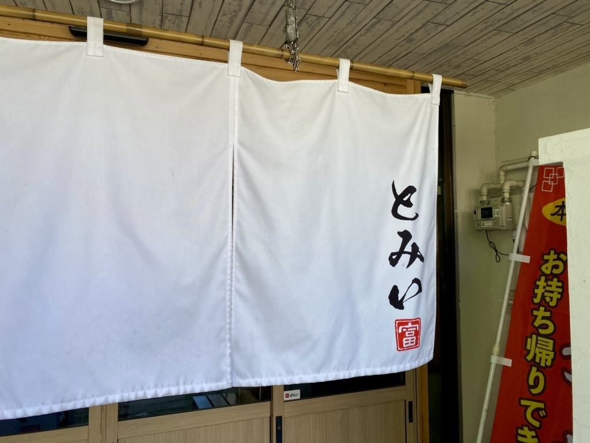